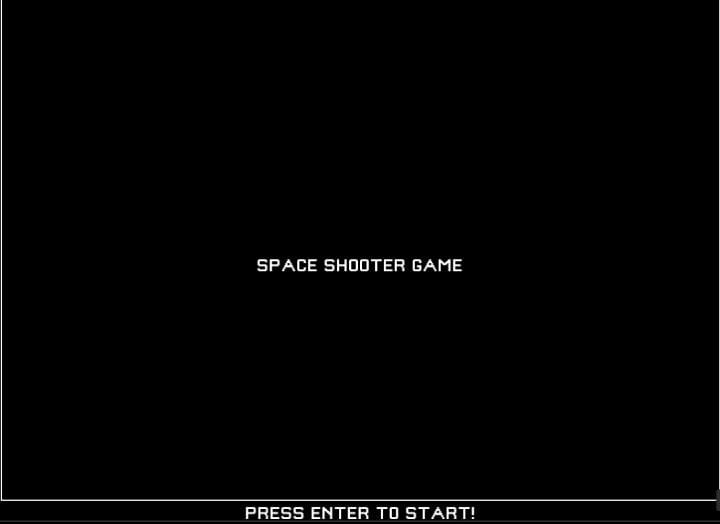
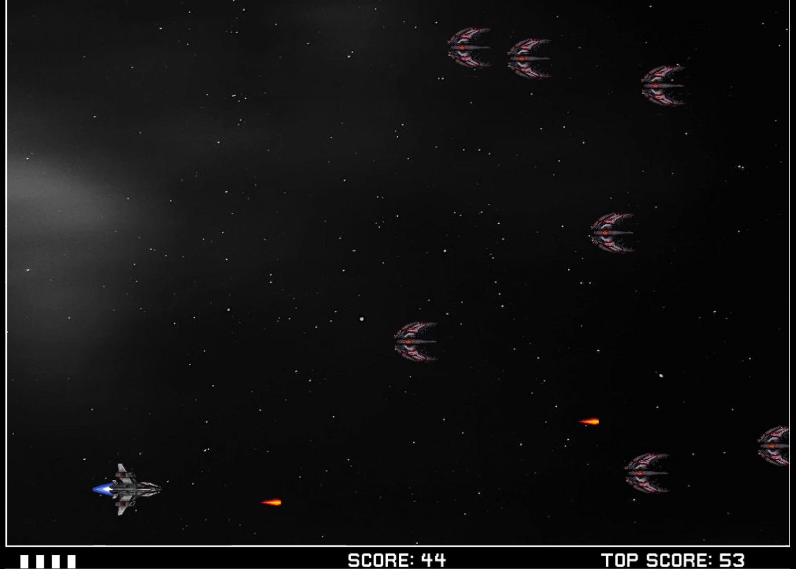

Complementos de Programação de Computadores
Adaptação do clássico R-TYPE
Unidade curricular
Complementos de Programação de Computadores
Ano
1.º ano, 2.º semestre · 2022/23
Equipa
3 elementos


O objetivo do jogo é sobreviver a ondas crescentes de aliens, disparar mísseis para os destruir e acumular pontos. Ao atingir um determinado valor de pontos, os aliens tornam-se mais rápidos e mais frequentes, até aparecer o alien "boss". Ao derrotá-lo o jogador vence o jogo.
O jogador tem um número limitado de vidas, sendo perdidas com a colisões contra os aliens. Ao ficar sem vidas, o jogo termina.
A pontuação máxima é guardada num ficheiro de texto e recarregada a cada execução, funcionando como recorde pessoal ("top score") entre partidas.
Este jogo foi desenvolvido em linguagem C++ e com a biblioteca Allegro.
Curta demonstração do funcionamento do jogo.